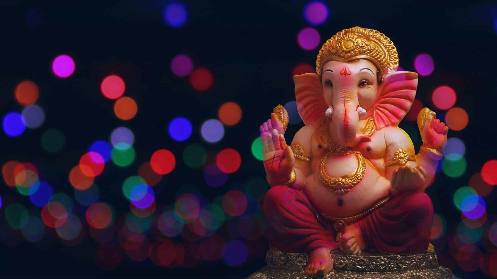
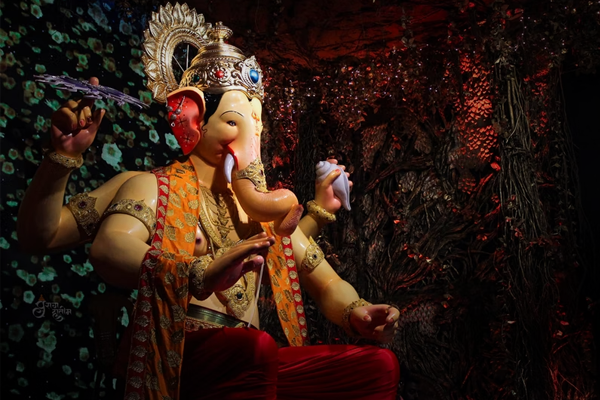
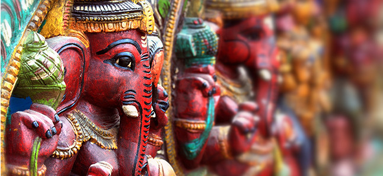
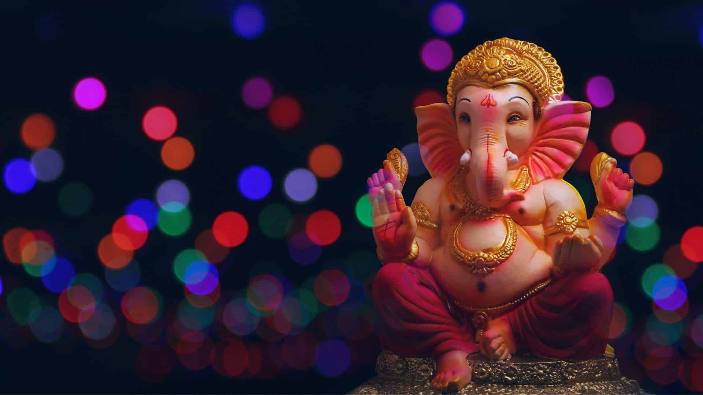
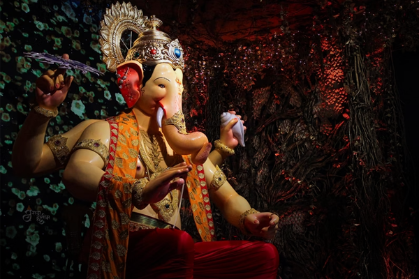
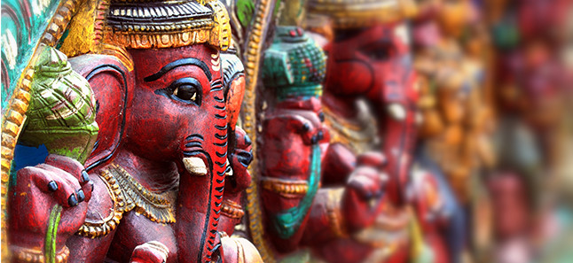

|
 |
|  |  |
Ganesh Chaturthi, also known as Vinayak Chaturthi or Ganeshotsav, is a Hindu festival commemorating the birth of the Hindu god Ganesha. The festival is marked with the installation of Ganesha's clay idols privately in homes and publicly on elaborate pandals (temporary stages). Observances include chanting of Vedic hymns and Hindu texts, such as prayers and vrata (fasting). Offerings and prasada from the daily prayers, that are distributed from the pandal to the community, include sweets such as modak as it is believed to be a favourite of Ganesha. The festival ends on the tenth day after start, when the idol is carried in a public procession with music and group chanting, then immersed in a nearby body of water such as a river or sea, called visarjan on the day of Ananta Chaturdashi. In Mumbai alone, around 150,000 statues are immersed annually. Thereafter the clay idol dissolves and Ganesha is believed to return to his celestial abode. The festival celebrates Ganesha as the God of New Beginnings and the Remover of Obstacles as well as the god of Wisdom and Intelligence and is observed throughout India, especially in the states such as Maharashtra, Madhya Pradesh, Karnataka, Kerala, Delhi, Odisha,Telangana, Andhra Pradesh, Tamil Nadu and Goa. Ganesh Chaturthi is also observed in Nepal and by the Hindu diaspora elsewhere such as in Australia, New Zealand, Canada, Singapore, Malaysia, Trinidad and Tobago, Guyana, Suriname, other parts of the Caribbean, Fiji, Mauritius, South Africa, the United States, and Europe. In the Gregorian calendar, Ganesh Chaturthi falls between 22 August and 20 September every year. Although the origin of Ganesh Chaturthi remains unknown, it became increasingly popular after a public celebration was initiated by political activist, Bal Gangadhar Tilak, in Maharashtra in the year 1893. It was a means to form a "Hindu nationalist identity" and rebel against British rule. Reading of texts, feasting, athletic and martial arts competitions are held at public venues.
|
 |
|  |  |
Ganesh Chaturthi, the festival celebrating the birth of Lord Ganesha, involves a series of rituals and customs that are performed with devotion and enthusiasm. Here are the key rituals associated with Ganesh Chaturthi:
The festival begins with the Sthapna of the Ganesh idol at home or in a public pandal (temporary shrine). A priest or a family member performs a purification ritual, chanting mantras, and invoking the presence of Lord Ganesha into the idol.
This ritual involves infusing life into the idol by inviting the divine essence of Lord Ganesha into it. Mantras and prayers are recited during this process, asking Lord Ganesha to reside in the idol for the duration of the festival.
The 16-step puja involves devoutly offering prayers to Lord Ganesha. After washing the idol's feet, it is bathed in a mixture of milk, ghee, honey, curd, and sugar (panchamrit snan). Scented oil and Ganga jal (holy water) are applied. New clothes (vastra) are offered along with flowers, rice (Akshata), garland, sindoor, and sandalwood paste. Devotees deck the idol and offer modak, betel leaves, coconut (naivedya), and light incense sticks and lamps while chanting hymns and mantras.
Daily prayers and rituals are performed in front of the idol, including the offering of flowers, incense, and traditional sweets like modaks. Devotees recite specific Ganesha mantras and sing bhajans (devotional songs) dedicated to Lord Ganesha.
This pre-immersion ritual is marked by joy and devotion. People of all ages participate in singing, dancing, and lighting fireworks. The ritual includes Niranjan aarti, Pushpanjali arpan, and Pradakshina, bidding farewell to Lord Ganesha.
On the final day of the festival, which is usually the 10th day or Anant Chaturdashi, the idol is immersed in a water body, symbolising the departure of Lord Ganesha. This immersion ceremony is accompanied by processions, music, and dance, and it marks the conclusion of the festival.
Some devotees observe vrat (fasting) on Ganesh Chaturthi, abstaining from food until the evening puja. Others may choose to fast on specific days during the festival.
In recent years, there has been a growing emphasis on eco-friendly celebrations. Many devotees opt for clay idols and practice responsible immersion to minimise environmental impact.
Some devotees use the occasion of Ganesh Chaturthi to perform acts of charity and community service as a way of seeking blessings from Lord Ganesha. Ganesh Chaturthi is not only a religious festival but also a cultural celebration that promotes unity, devotion, and the removal of obstacles from one's life. The specific rituals and customs may vary by region and tradition, but the core essence of honouring Lord Ganesha remains the same.
-->| S. No. | Temple | Location |
|---|---|---|
| 1. | Lalbaugcha Raja | Mumbai |
| 2. | Siddhivinayak Temple | Mumbai |
| 3. | Dagdusheth Halwai Ganpati Temple | Pune |
| 4. | Manache Ganpati | Pune |
| 5. | Khairatabad Ganapathi | Hyderabad |
| 6. | Keshavji Naik Chawl Ganpati | Mumbai |
| 7. | Shree Sarvajanik Ganeshotsav | Goa |
| 8. | Mysore Palace (Ganesha Shrine) | Mysore |
| 9. | RK Math | Kolkata |
| 10. | Sri Vinayaka Devaru Temple | Bengalore |